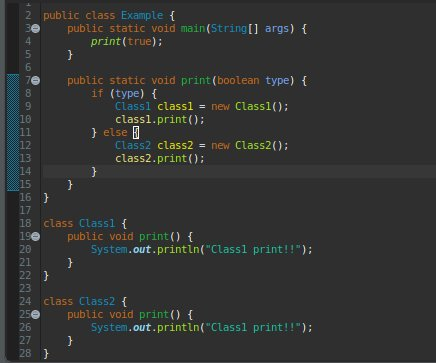
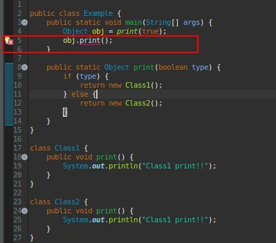
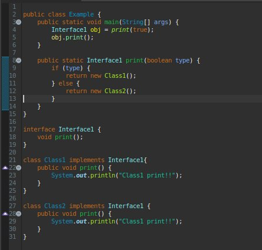
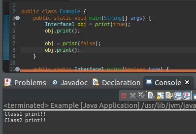
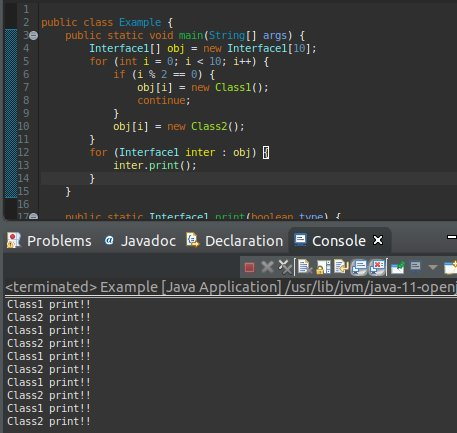

こんにちは。明月です。
このページではインターフェースに関して調べてみます。
インターフェースとは一般クラスと違いますが、処理式と変数がない形だけあるクラス(?)、すなわち、「new」ができないクラス(?)と言います。
つまり、「Heap」メモリに割当てるのができなく、「Stack」だけメモリアドレスを宣言する形になるクラスです。
クラスといいますが、インターフェースですね。
そうなら、なぜ処理式がなしで形が￥だけあるインターフェースがあるか？
プログラムを作成する時に本当に割当てるクラスだけではなく、形だけで宣言してデータを扱う時がありますね。

上の例を見れば、時にプログラム上で問題がありません。「print」関数のパラメータで「true」を入れると「Class1」の「print」が実行して結果が出力するはずですね。
または「false」を入力すると「Class2」が出力します。
でも、私の場合はクラスをリターンしてクラスの値をもらいたい時にどうすればいいかな？
確かに上のクラスが違うので、一つの返却データタイプで決めて返却はできないですね。
じゃなければ、「Object」タイプで返却をもらうことができますが(※Javaはすべてのクラスが「Object」タイプを経書しています。)、「Object」タイプには「print」関数がないので、「print」関数を呼出すのができないですね。

上の例を見れば、「Eclipse」でエラーが発生しますね。
そうです。そのために、インターフェースが必要ですね。

上の例を見れば、「interface」を宣言して「interface」中で何を使うかのメソッドを宣言します。
参考に「interface」は処理式と変数は要らないです。なのでアクセス修飾子も要らなく、全て「public」だと思ったらよいです。
また、「main」関数に戻って「print」関数を呼出すと「Interface1」の形式でリターンします。でもそのインタフェースは「true」の場合は「Class1」を「false」の場合は「Class2」のデータを持っています。

インタフェースの場合はリターン式のためではなく、クラスを纏めて処理式を作ることも可能ですね。

上のみたいに戦略的に設計も可能です。
実際に「interface」は「oop」で重要なキーワードで本当に「oop」らしくプログラミングができるようにするキーワードですね。
後で、デザインパターンに関しても説明しようと思いますが、そのデザインパターンで核心な文法だし、概念ですね。
- [Java] Java servletでインスタンスを初期する方法2019/10/17 07:15:48
- [Java] Spring web frameworkで発生する文字化けのEncoding設定2019/10/16 07:32:55
- [Java] Web Spring frameworkでfilter設定2019/10/15 20:12:35
- [Java] Web serviceのweb.xmlでエラーページ設定2019/10/14 20:13:44
- [Java] JPAのDAOをFactoryパターンで管理する方法2019/10/13 22:55:52
- [Java] JPAのSpring frameworkで依存性注入する方法2019/10/13 00:40:08
- [Java] JPAでDAOを生成する方法2019/10/11 07:30:14
- [Java] JPAでトランザクションの使用方法とオブサーバーパターンで共通トランザクション関数を作り方2019/10/10 07:29:43
- [Java] JPAのQuery を作り方2019/10/09 07:34:08
- [Java] JPAのEntityクラス設定(Cascade, fetch)2019/10/08 07:43:33
- [Java] JPAでpersistance.xml設定とentityクラス設定(@GeneratedValue設定)2019/10/07 07:38:13
- [Java] EclipseでJPAフレームワーク設定する方法2019/10/04 19:24:43
- [Java] Web spring frameworkのJSPで使う言語 JSTL - XML2019/10/03 20:02:06
- [Java] Web spring frameworkのJSPで使う言語 JSTL - 関数、データベース2019/10/02 21:00:22
- [Java] Web spring frameworkのJSPで使う言語 JSTL - コアー、フォーマッティング2019/10/01 21:48:08
- [Java] JSPのSpring環境でschedulerのcronを使う方法2020/03/18 00:24:32
- [Java] POIを利用してExcelを扱う方法2020/03/17 01:48:00
- [Java] PDFを出力する方法(itextpdf)2020/03/13 00:47:31
- [Java] ログライブラリ(log4j)を使う方法2020/03/12 00:54:39
- [Java] Jsonタイプのデータを使う方法(Gsonライブラリ)2020/03/11 00:30:15
- [Java] Base64にエンコード、デコードする方法2020/03/09 10:24:01
- [Java] cmdコマンドを実行するための方法2020/03/06 18:01:10
- [Java] メール(javax.mail)を発送する方法2020/03/05 20:07:49
- [Java] クラス複製(Clonable, Reflection)2020/03/05 00:03:19
- [Java] シリアライズ(直列化: Serializable)2020/03/03 00:03:33
- [Java] StringBuilderとStringBufferの差異2020/03/02 07:52:22
- [Java] Compare関数を使う方法2020/02/29 03:00:00
- [Java] 数字フォーマット(お金表示及び小数点以下表示)2020/02/28 03:00:00
- [Java] サーブレット環境で現在の実行ディレクトリを取得する方法2020/02/27 03:00:00
- [Java] 日本語をユニコードに変換して、ユニコードから日本語に変換する方法2020/02/26 03:00:00